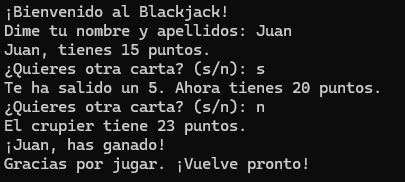

📌 Proyectos Destacados
🃏 Blackjack con C#
Juego clásico de cartas en lenguaje C# que consiste en obtener una mano de cartas cuyo valor se acerque lo más posible a 21 sin pasarse. Ganas si tu mano es más alta que la del crupìer, o si el crupier se pasa de 21 (Para ejecutarlo es necesario Visual Studio).
 Descarga del proyecto🚀 Juego de Dispara al objetivo en Python
Juego basado en disparar objetivos con una nave y una puntuación que se suma por cada enemigo eliminado, todo programado en lenguaje Python y también es necesario para ejecutarlo.
 Descarga del proyecto
Descarga del proyecto
💾 Menú multifuncional (Linux) en Bash
Script en Bash dividido en varios submenus (gestion de archivos y directorios, gestion de usuarios y monitorizacion del sistema), ademas de varias opciones extra (realizar copias de seguridad, algun juego...).
 Descarga del proyecto
Descarga del proyecto
🧮 Calculadora Avanzada en Kotlin
Calculadora con historial de cálculos y diseño moderno en Android.
📇 Gestor de Contactos con MySQL + Python
Aplicación CRUD para gestionar contactos usando SQL.